The Cartel Heist: прохождение миссии GTA 6
Опубликовано:
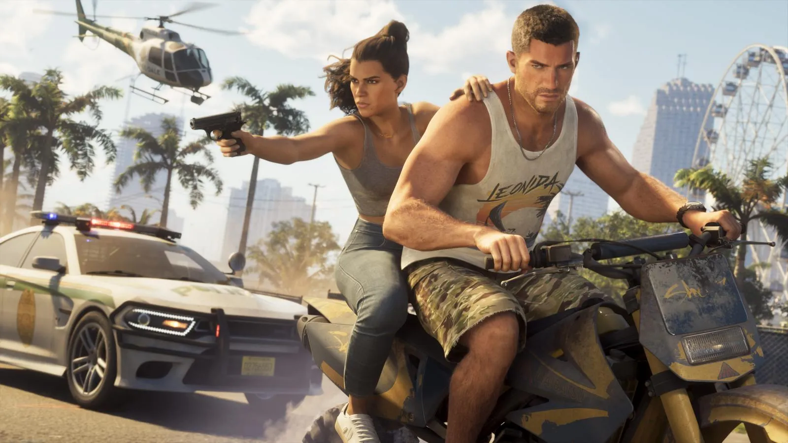
Коротко
- Финал главы 3 — ограбление банка картеля Sinfrontera National Bank. Подрыв вышек, захват зала, хранилище, бой со спецназом и бегство на автобусе.
- Глава 3, миссия 26 из 26. Играем за: Джейсон и Лусия.
- Награда: $120 000 и трофей Break the Bank.
Миссия коротко
| Глава | 3. Tits Ass Drug Money |
| Номер в сюжете | 26 |
| Играем за | Джейсон и Лусия |
| Кто даёт | Рауль Баутиста |
| Где начинается | Вайс-Сити, Stockyard |
| Условие | после Hidden Charges и всех остальных миссий главы 3 |
| Награда | $120 000 и трофей Break the Bank |
| Переиграть | нельзя — сохраняйтесь вручную |
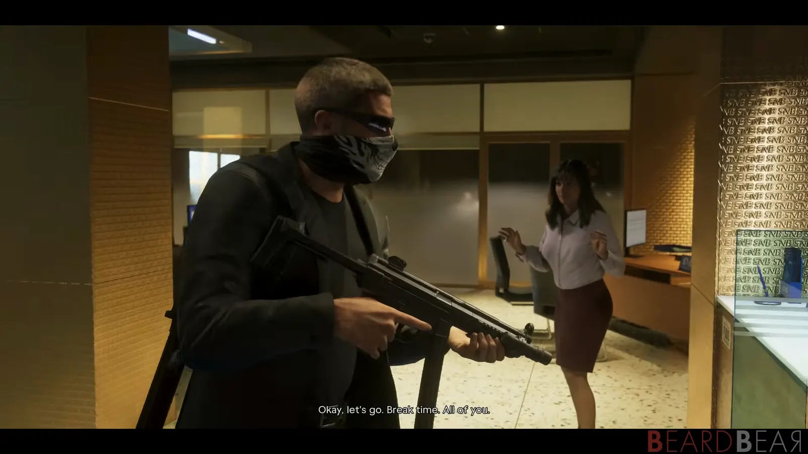
Где начинается
Прохождение по шагам
- Езжайте к вышкам и подорвите заряды.
- Успейте к банку: со всеми тремя вышками — около 11 минут.
- Войдите и ждите сигнала Карима.
- Вырубите охранника и сгоните отмеченных людей в центр зала — □ (X).
- Спуститесь лифтом к хранилищу и запугайте охранника.
- Отбейтесь от полиции и спецназа и встретьтесь с Раулем.
- Вскройте хранилище (L2+R2 (LT+RT), часто ✕ (A)) и соберите деньги.
- Спасите Николь и уходите через подвал.
- Уезжайте, защищайте автобус и выходите на шоссе.

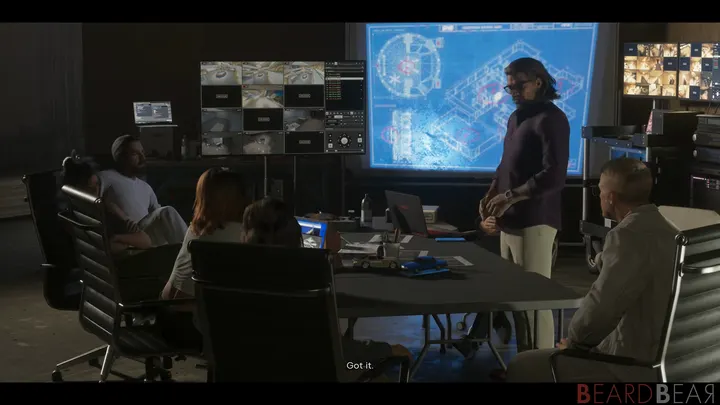

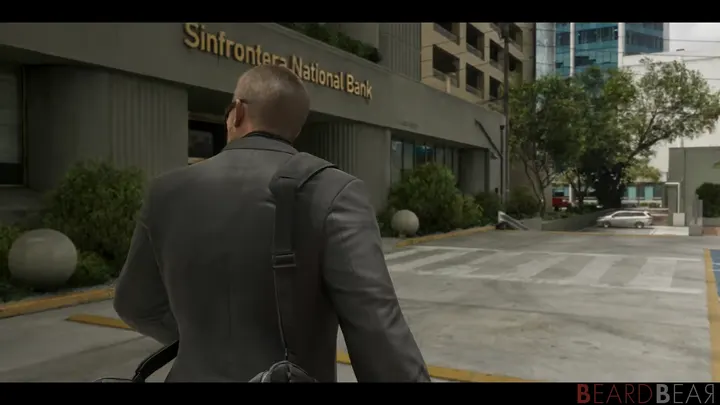

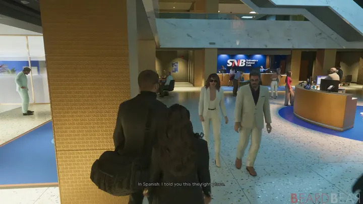

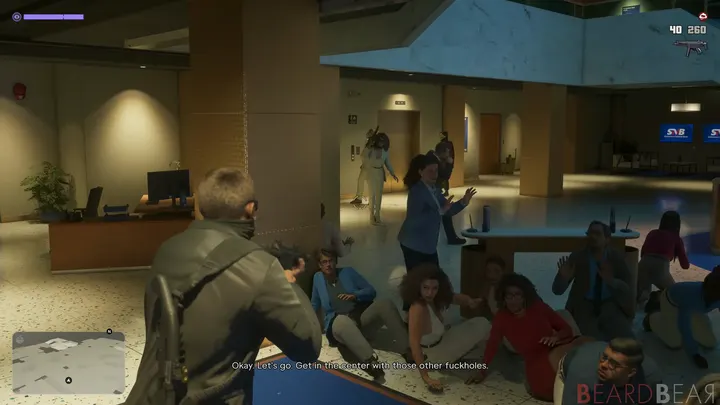

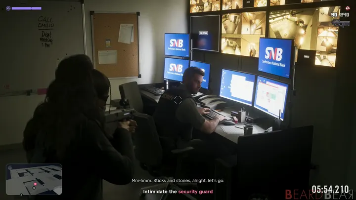

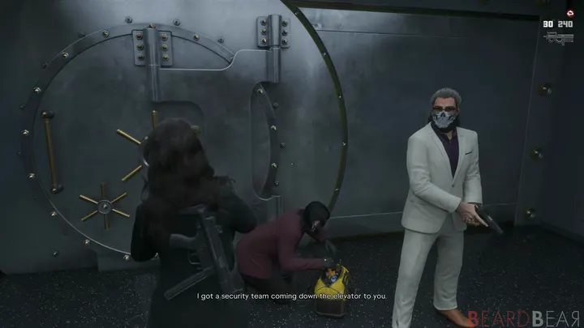

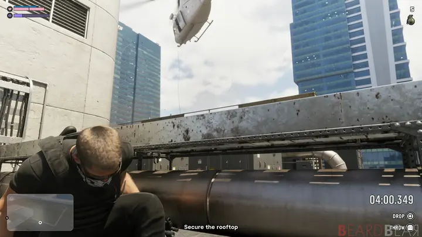

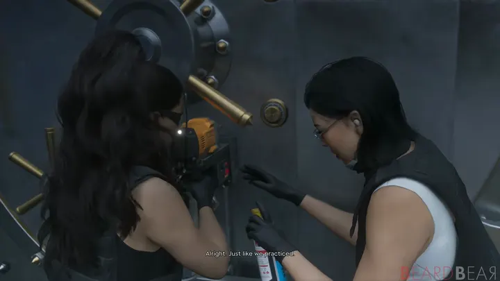

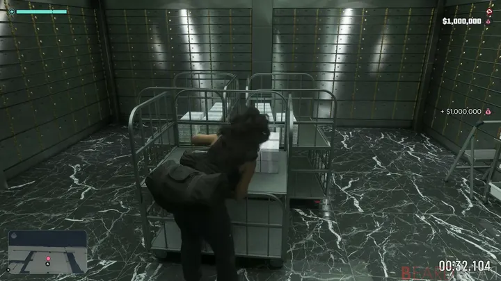
Советы
- Сначала берите пачки банкнот, потом россыпь — пачки дороже.
- Когда Карим подсвечивает тех, кто идёт к двери, снимайте их первыми.
- Выбивайте оружие из рук — бонус Professional.
- Гранатомёт в погоне с бесконечными патронами — по машинам и вертолёту.
Что можно пропустить
После финальной сцены можно отдохнуть или сразу начать Ocean Beach — на прогресс не влияет.
Частые вопросы
Сколько денег за The Cartel Heist?
$120 000 и трофей Break the Bank.
Сколько времени на ограбление в The Cartel Heist?
Около 11 минут, если в Hidden Charges заминированы все три вышки.
Источники: PowerPyx, «GTA 6 The Cartel Heist Walkthrough», 18–19.11.2026. Кнопки указаны для PS5, в скобках — Xbox. Названия миссий — как в английской версии игры.